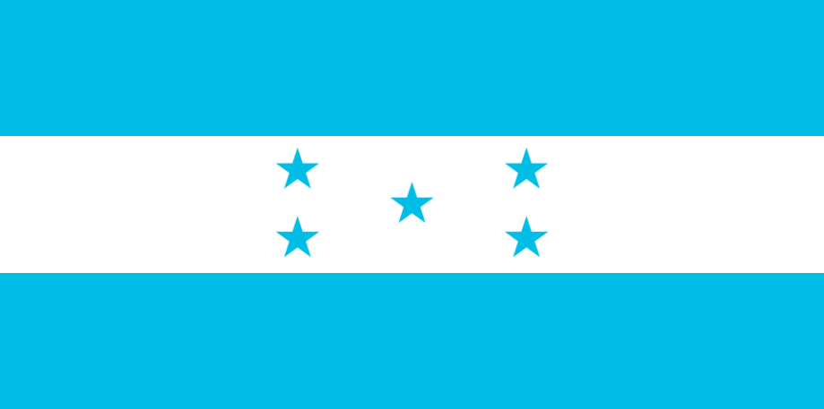

About me
My name is Alexis Machuca. I was born in Honduras but after my mission got marrie in Guatemala.
I feel very proud to have been born in a country full of culture and natural wealth.
Honduras
Honduras is located in Central America, Honduras is bordered to the west by Guatemala,
to the southwest by El Salvador, to the southeast by Nicaragua, to the south by the
Pacific Ocean at the Gulf of Fonseca, and to the north by the Gulf of Honduras, a
large inlet of the Caribbean Sea. Its capital and largest city is Tegucigalpa.
